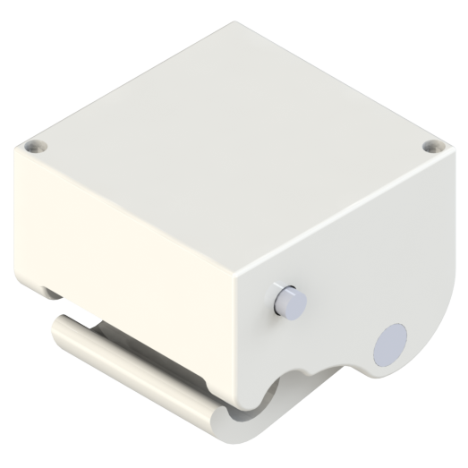
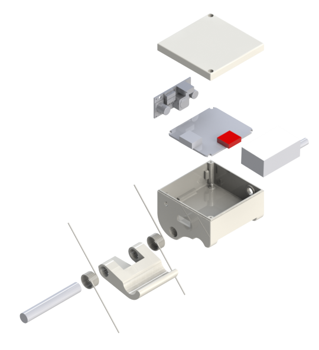

VTX Casing
Alpinax, August 2016

The video transmission casing (VTX casing) was a small design project at Alpinax. The object of the project was to house the video transmission boards and mount onto a MOVI gimbal. The key components of the design were the clipping mechanicsm and the housing itself.
|  |
To create the clipping mechanism, I used two torsional springs to provide torque onto a small clipping lever. The casing was designed with guides fitted to the frame of the gimbal. Internally small spacers along with double stick foam tape held the electronics in place. All of the custom parts were designed to be SLS printed for support and cost concerns (cheapest for one-off custom part). All parts were toleranced accordingly.
 |
We were able to fully assemble the casing, getting the custom parts from an online printing service and off-the-shelf parts from McMaster-Carr. The casing cleaned up the video transmission wiring greatly and has seen successful use on the Alpinax drones.